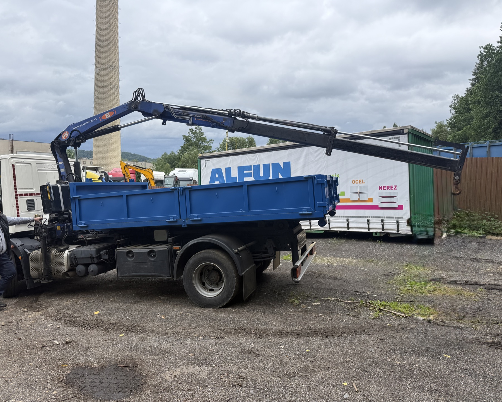
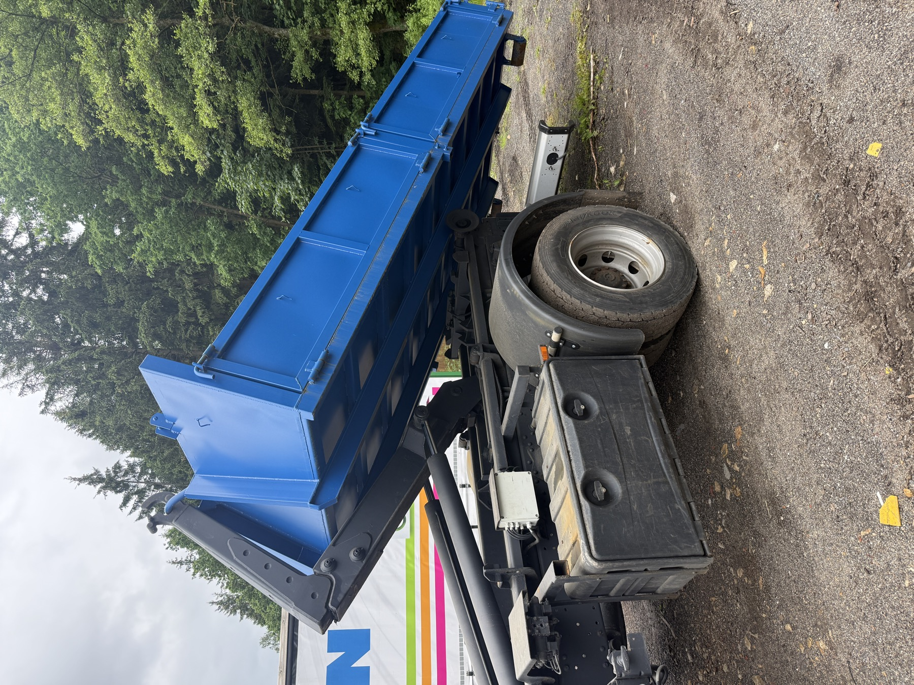

Odvoz odpadu
Odvoz odpadu kontejnerem po rekonstrukci, úklidu nebo stavbě
Pomůžu s odpadem z rekonstrukcí, vyklízení, zahrad, staveb a provozů. Pro rychlou cenu napište, co v odpadu je, přibližné množství, obec a přístup k místu.
Ověření před objednáním
U směsného a objemného odpadu rozhoduje důvěra v popis i nacenění
Za Kontejnerovka.cz stojí Matyáš Mašín, IČO 01379178, plátce DPH. Když pošlete pravdivý popis a fotku odpadu, před výjezdem si potvrdíme cenu, DPH, doklad i to, jestli je odpad vhodný pro běžný odvoz.
Z praxe
Čistota materiálu, hmotnost a přístup jsou důležitější než obecný popis
Odvoz odpadu se naceňuje podle složení materiálu, množství, hmotnosti a přístupu pro auto. Když je náklad promíchaný, je lepší to napsat otevřeně hned.
Chci cenu
Reálný výjezdPřístup, trasa a stání se řeší předem, ne až na místě.

Kontejner v provozuNa fotce je skutečný kontejner při sklápění, odvozu a manipulaci na místě.
Fotka a pravdivý popis odpadu většinou ušetří nejvíc času.
Rozdíl mezi čistou sutí, betonem, směsí a objemným odpadem je zásadní pro cenu i postup. Nejpřesnější bývá krátký popis doplněný fotkou.
Typické odpady
Stavební zbytky, vyklízení, objemný odpad, dřevo, bioodpad a směsný odpad po domluvě podle složení.
Co říct předem
Zda je v odpadu plast, kov, izolace, elektroodpad, chemie, barvy, azbest, pneumatiky nebo jiný problémový materiál.
Proč to řešit
Správný popis odpadu pomůže vybrat vhodný postup a předejít zdražení nebo odmítnutí na místě likvidace.
Čistý odpad je levnější a jednodušší
Když se suť, zemina, dřevo a bioodpad drží odděleně, je nacenění přehlednější. Směs více materiálů může být dražší, protože má jiný způsob likvidace.
Nebezpečný odpad není běžný odvoz
Azbest, eternit, chemie, oleje, baterie, tlakové nádoby, barvy a elektroodpad je nutné nahlásit předem. Tyto věci se neřeší jako běžný kontejner.
Jak popsat odpad, ať řeknu cenu napoprvé
U odvozu odpadu je největší rozdíl mezi čistě vytříděným materiálem a směsí. Když zákazník napíše jen „odpad“, cena se nedá přesně určit. Proto formulář i telefonická domluva směřují na složení, množství a přístup.
- suť, zeminu, dřevo a bioodpad je lepší držet odděleně
- objemný odpad popište podle hlavních materiálů
- nebezpečný odpad je nutné nahlásit předem
- fotka hromady pomůže s odhadem množství
Dotazy
Často k odvozu odpadu
Můžu do kontejneru dát všechno najednou?
Bez domluvy ne. Směsný odpad může být výrazně dražší a některé materiály nelze vozit běžně.
Odvezete i objemný odpad?
Ano, po domluvě podle složení a množství. Popište, co v odpadu je.
Stačí zavolat?
Ano. Nejrychlejší je říct adresu, druh odpadu, množství a termín.
Vyklízení
Starý nábytek, dřevo, plasty a směs po úklidu je potřeba popsat. Některé věci se řeší jinak než stavební suť.
Stavební odpad
Směs po rekonstrukci může obsahovat více druhů materiálů. Při poptávce uveďte, zda je v odpadu izolace, sádrokarton nebo další příměsi.
Zakázané odpady
Azbest, chemie, oleje, baterie, pneumatiky a elektroodpad nepatří do běžného odvozu bez předchozí domluvy.
Odvoz odpadu z vyklízení, rekonstrukcí a úklidů
U odvozu odpadu je nejdůležitější složení. Jinak se řeší objemný odpad po vyklízení, jinak stavební směs, dřevo, bioodpad nebo čistá suť. Když zákazník popíše, co v odpadu bude, lze lépe navrhnout cenu i vhodný postup. Pokud jde hlavně o směs po rekonstrukci nebo bourání, je přesnější jít rovnou na stránku pro odvoz stavebního odpadu.
Další dotazy
Praktické otázky ke službě
Co napsat do poptávky?
Popište, z čeho se odpad skládá, kolik ho přibližně je, kde se nachází a zda lze přistavit kontejner.
Můžu poslat fotku odpadu?
Ano, fotka výrazně zrychlí nacenění, hlavně u směsného a objemného odpadu.
Rychlá domluva
Odvoz odpadu v blízkých obcích kolem Unhoště
U odpadu z vyklízení, zahrady nebo rekonstrukce v okolí Svárova, Unhoště, Kladna, Rudné a Hostivice pomůže fotka. Podle ní lze rychleji poznat, jestli jde o objemný odpad, stavební směs, dřevo, bioodpad nebo materiál, který se musí řešit zvlášť.
Potřebujete odvézt odpad?
Chci cenuRychlá poptávka
Pošlete poptávku rovnou z této stránky
Stačí telefon, obec a co se má odvézt nebo dovézt. Fotka místa nebo odpadu nacenění urychlí. Ozvu se s cenou nebo krátkým doplňujícím dotazem.